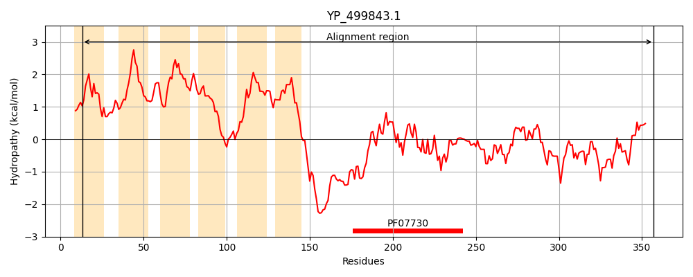
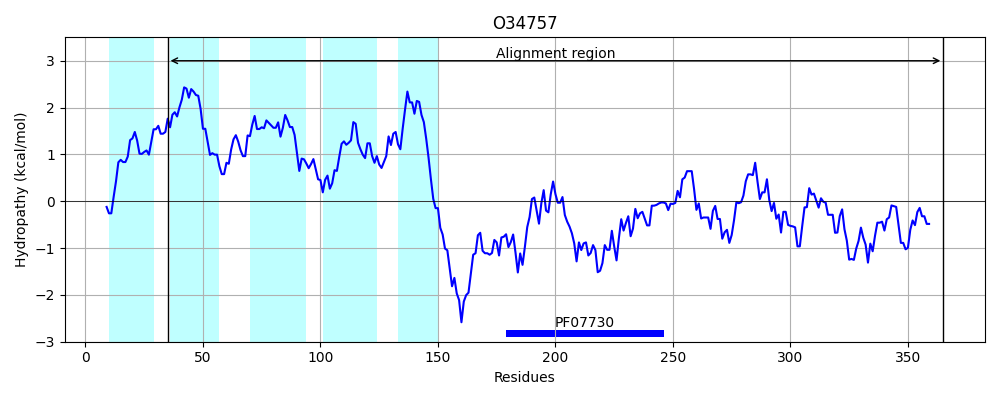
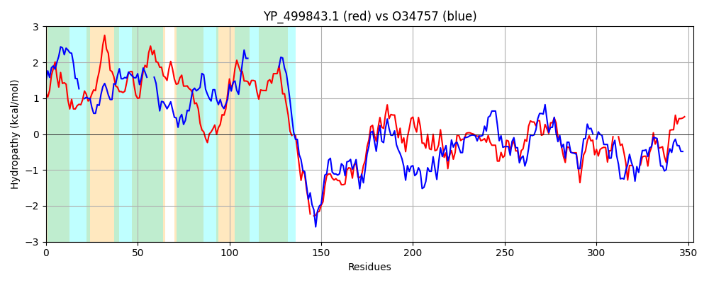

Hit Accession: O34757
Hit TCID: 9.B.238.3.5
Hit Description: gnl|BL_ORD_ID|7150 gnl|TC-DB|O34757|9.B.238.3.5 Sensor histidine kinase DesK OS=Bacillus subtilis (strain 168) OX=224308 GN=desK PE=1 SV=1
Mach Len: 353
e:0.000000
Query TMS Count : 6
Hit TMS Count: 5
TMS-Overlap Score: 3.200000
Predicted Substrates:CHEBI:8526;protein polypeptide chain, CHEBI:2359;ATP
BLAST Alignment:
Score: 340 , Bit scores: 135 bits, E-value: 1.5e-36, Alignment length: 353, Percentage identity: 28
Query: 13 SSILYLIFPIAGIFFNEVYGPKWLYIISVIVFSLSYLILVIVNNRLNTLMFYILLIIHYFIICYFVFSVHPMLSLFFFYSAFAVPFTFKNNVKKTATNLFILTMIICTIITYLLYNNYFVAMMVYYVVISLIMLD-NFKKMKNRE-YQKEIAEKNRHINTLIAEQERHRIGQDLHDTLGHVFASLSLKSELAYKLIDADVEKVKAELLAINKLSRESLNKVREIIDDVKLPSFIEEIDSIRKVLKDADIDFTFENKELAQVLSPTKQSMLVMITREAINNVIKHANASKVHGKLKTVNNHKLLLMIEDDG--KGIDSDCE----VKSISQRVQHLNGTLAVDSTNGTKIIIEI 357
S+ + ++ I + F VY ++ ++ L +L+ ++ TL YI F I YF+ ++ + Y + N F LT I +IT +IS I+L + K K RE ++++ + N I L+ +ER RI +DLHDTLG + + LKS+LA KLI D E+ EL ++ + +R SLN+VR+I+ +K +E+ +I+++L+ ADI F +E ++ + +S +++L M +EA+ NV+KH+ A ++ + ++++ + DDG KG ++ + + +R++ NG+L +D+ NGTK+ + I
Sbjct: 35 STFVIIVGIILTLLFFSVY--RFAFVSKGWTIYLWGFLLIGISTASITLFSYIYFA---FFIAYFIGNIKERVPFHILYYVHLISAAVAANFSLVLKKEFFLTQIPFVVIT----------------LISAILLPFSIKSRKERERLEEKLEDANERIAELVKLEERQRIARDLHDTLGQKLSLIGLKSDLARKLIYKDPEQAARELKSVQQTARTSLNEVRKIVSSMKGIRLKDELINIKQILEAADIMFIYEEEKWPENISLLNENILSMCLKEAVTNVVKHSQAKTCRVDIQQLWK-EVVITVSDDGTFKGEENSFSKGHGLLGMRERLEFANGSLHIDTENGTKLTMAI 365 | Protein Hydropathy Plots: |
|---|
|  |  |
Pairwise Alignment-Hydropathy Plot:
|
|---|
|  |